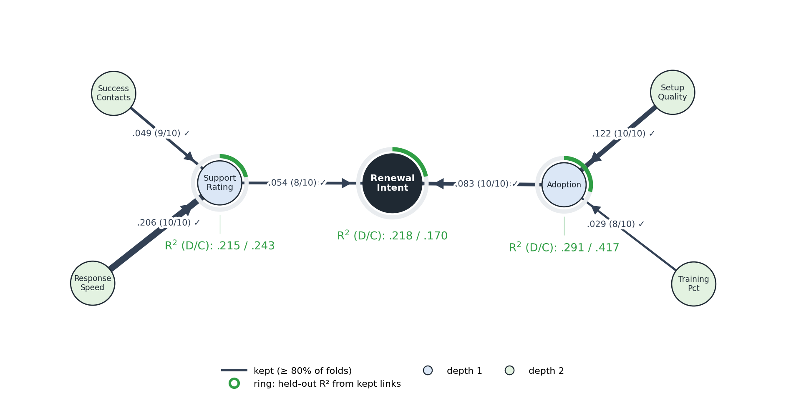
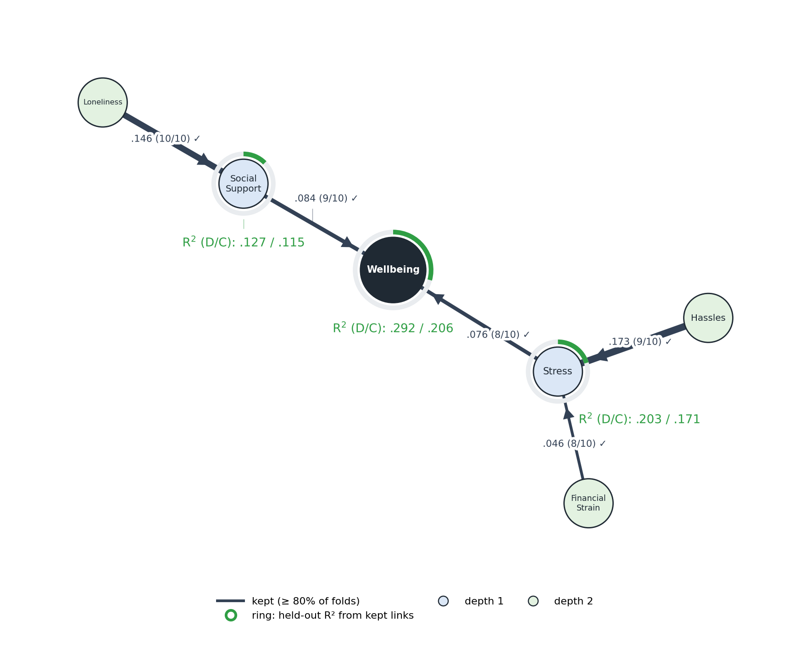
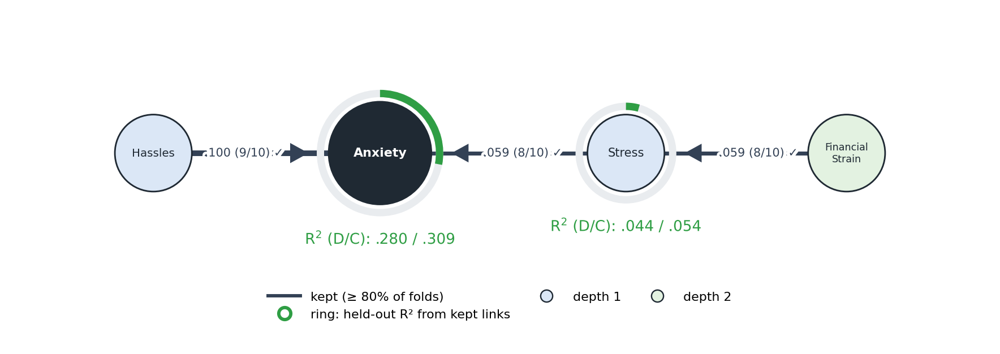
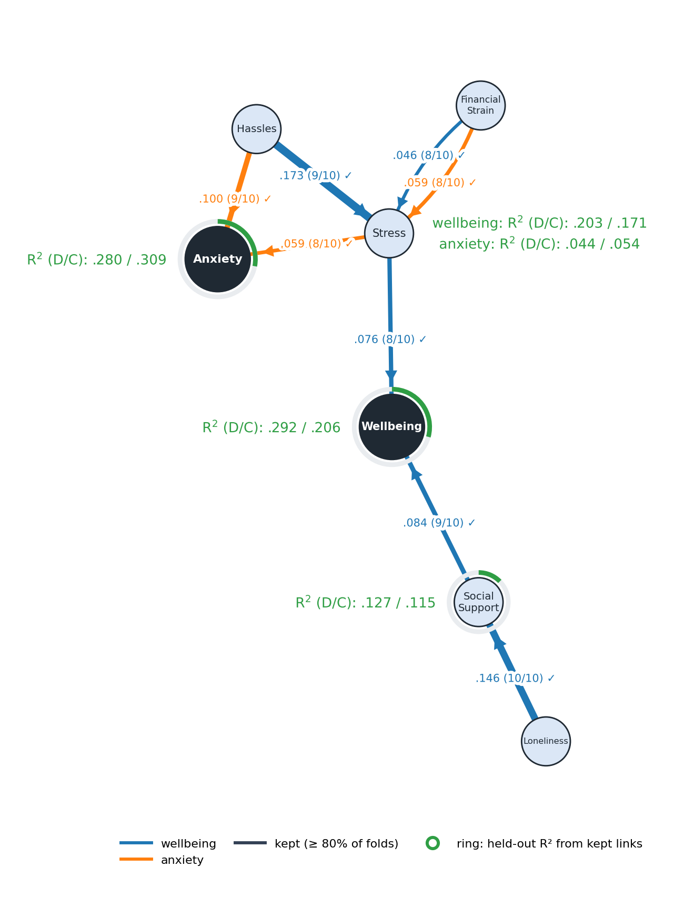

Start here
OPEN starts with an outcome and candidate predictors. It looks for predictors that contribute on held-out folds, then can repeat the search for predictors of those retained variables. The resulting layers are a map of predictive relationships.
In each project we reserve one part of the data for discovery and another for confirmation. The confirmation stage tests selected links on independent rows. A separate fit calculation asks how well the selected predictors perform together. These are related but different questions.
To follow along, run the code blocks in order from the repository root. The included datasets have 1,200 fictional observations each. You can also read the results without running anything.
git clone https://github.com/imh-ds/open.git
cd open
python -m pip install ".[visualization]"Data and generation details: business CSV · psychology CSV · simulation code. The examples below report the supplied data and fixed seeds, not real people or customers.
Can we predict renewal intent?
A fictional software company wants to understand which account measures help predict a contact’s intention to renew. Its dataset has one row per account. The outcome, renewal_intent, is a 1–7 survey score; the ten candidate measures include product adoption, support rating, training and account tenure.
The team has two linked questions: which measures predict renewal intent, and what predicts those measures? It wants a map to guide further investigation, not an automatic decision to change customer treatment. That distinction matters: the outcome is stated intent, not actual renewal, and the data are observational.
import pandas as pd
from opennet.api import DiscoveryConfig, GraphStyle, analyze, plot_discovery, save_split
business = pd.read_csv("examples/tutorial/data/business_customer_renewal.csv")
outcome = "renewal_intent"
predictors = [c for c in business.columns if c != outcome]
print(business.shape, predictors)Before modeling real data, check that each row represents the intended unit, predictors are available when a prediction would be made, and the outcome is numeric. Exclude IDs and variables measured after the outcome if the intended use is prospective prediction. Categorical inputs need appropriate numeric encoding. Multiple rows per account need a design that keeps related observations together; the standard workflow splits rows and does not offer group-aware folds.
Decide what the team will run
How much data reaches each stage?
The 1,200 accounts become 600 discovery and 600 confirmation rows with the default 50/50 split. Within discovery, the default 10 folds train on roughly 540 of those rows and evaluate on the remaining 60, rotating the held-out fold. These 10 overlapping training sets are not 10 independent studies.
Ten folds is the setting used in OPEN’s published validation grid at discovery N = 300, 500 and 1,000. The example’s stage size of 600 falls between grid points. There is no validated rule that says a particular sample size must use a particular K. Fewer folds give larger evaluation folds and fewer partitions; more folds require more computation and smaller evaluation folds. For a small dataset, using all rows for discovery and confirming later in an independent sample may be more useful than a split that leaves both stages too small.
How far should the map go?
The team sets max_depth=2: first find predictors of renewal intent, then look for predictors of those retained measures. Setting it to 1 would answer only the first question. A deeper network runs more searches and is harder to interpret; an upstream arrow is still predictive and does not establish a chain of causes.
Which model?
We begin with engine="ols", a familiar linear baseline. OLS can miss relationships that bend or reverse direction. Later, the psychology project compares engines on the same sample. We also set interactions=False to focus on individual contributions. The package default is True: enabling it searches for certain pairwise gains beyond an additive model, but interaction results currently remain discovery leads because they do not have a calibrated confirmation test.
Run the analysis and read the graph
result = analyze(
business, outcome=outcome, predictors=predictors,
engine="ols",
config=DiscoveryConfig(max_depth=2, interactions=False, seed=42),
split_seed=42,
)
print(result.summary())
save_split(result, "tutorial-output/business", plot=False)
style = GraphStyle(fit_label_size=1.35, show_flagged=False,
show_title=False, show_r2_legend=False, show_footnote=False)
plot_discovery(result.discovery, path="tutorial-output/business-network.png",
confirmation=result.confirmation, confirmation_fit=result.fit,
style=style)
Start with one arrow
Read adoption → renewal intent as “adoption helped predict renewal intent in this model.” Its edge value, approximately .083 (10/10) ✓, combines three pieces of information. The median discovery-fold reduction in held-out R² after removing adoption was .083, conditional on the other available candidates. Its contribution exceeded the shuffled-noise reference in 10 of 10 folds. The checkmark means the selected link also passed the independent confirmation test after adjustment for the selected test family.
The .083 is an incremental predictive contribution, not a regression coefficient: it does not say a one-unit rise in adoption changes renewal intent by .083, and the arrow does not tell you whether the association is positive or negative. Shared information among correlated candidates can make an individual contribution smaller. Contributions on different edges do not generally add to the node’s R².
Then read the destination node
Renewal intent has R²D/C = .218 / .170: the kept incoming predictors achieved average cross-validated R² of .218 in discovery and .170 in confirmation. The graph writes this as R² (D/C): .218 / .170. Each fold compares prediction error with a baseline using the training-fold outcome mean; the displayed value averages fold R² values. It is not necessarily the percentage reduction in pooled error. Discovery chose the predictors, so its fit can be optimistic. Confirmation fit refits the frozen predictor set within folds of the independent confirmation rows; it is not a single unchanged fitted model deployed to new customers.
The green ring shows discovery fit for a target. Support rating and adoption can also have fit values because they become targets at depth 2. A predictor with no evaluated incoming model may have no fit ring. A solid line met the default 80% discovery rule; a flagged line meets the 40% rule but not the kept rule. Fold tallies describe stability against the noise reference, not p-values. Line thickness reflects the size of the median contribution. Titles and explanatory keys are enabled by default; this tutorial hides them to make room for the explanation.
Follow the second layer
Setup quality and training predict adoption, while response speed and success contacts predict support rating in this example. These are separate target models. The team should not translate that into “training causes adoption, which causes renewal.” Each arrow reflects the available candidates, the selected engine, and the particular sample.
What should the company do with .170?
There is no universal “good” R². For this team, .170 might be useful for identifying measures worth investigating, yet inadequate for an automated decision about an individual account. A real deployment would need a comparison to an operational baseline, errors on the 1–7 scale, costs of mistakes, and evaluation in later or otherwise representative accounts. A small contribution could matter at scale, while a confirmed link may be too small to justify an intervention.
Support rating was retained in 8 of 10 folds, close to the 80% cutoff. Its tier could change with different partitions. For example, price fairness passed in 7 of 10 folds and is flagged, so this figure hides it and the default confirmation does not test it. A flagged or absent arrow is not proof of no relationship: it might be weak, correlated with another candidate, hidden by a display floor, excluded from that target’s candidate pool, or not selected. Confirmation tests frozen selected links, not every possible pair.
For the adoption → renewal intent link, the confirmation table reports p = 1.25 × 10−15 and a Holm-adjusted p = 4.98 × 10−15, across the six selected testable links in this business network. The adjusted value is below .05. Under the test’s assumptions, that is evidence against the test’s null after the chosen adjustment; it is not the probability that the claim is true or a measure of its practical value. If the p-value is missing, inspect note: a link can be untested, for example when it is an interaction or shared group, or when the confirmation model cannot be identified. No checkmark alone cannot distinguish untested from tested but unconfirmed.
print(result.discovery.links) # candidate tiers and discovery contributions
print(result.discovery.fit) # selected-network and full-pool fit
print(result.confirmation) # p, p_adjusted, confirmed, n, note
print(result.fit) # confirmation fit for each target
print(result.discovery.stops) # why expansion stoppedIn real data inspect sample sizes as well as fit. Discovery imputes missing predictor values within training folds; confirmation uses complete rows for each target and its frozen pool. Missingness may therefore change the sample behind a confirmation result. A negative held-out R² is possible: it means the fold predictions performed worse than the calculation’s baseline.
Do the same factors predict well-being and anxiety?
A fictional psychology team surveys 1,200 adults. It wants separate predictive maps for well-being and anxiety symptom scores, both measured on a 1–7 scale. Anxiety here is a score, not a clinical diagnosis. The team includes ten candidate measures, including stress, daily hassles, social support and age.
The outcomes share participants and may be correlated. analyze uses one split and builds a separate network for each outcome; it does not estimate correlated outcome errors or fit a joint outcome model. Shared participants alone do not require such a model for these separate predictive questions. The default Holm correction covers testable links across both outcome networks.
from opennet.api import plot_outcomes, save_batch
psych = pd.read_csv("examples/tutorial/data/psychology_wellbeing.csv")
outcomes = ["wellbeing", "anxiety"]
predictors = [c for c in psych.columns if c not in outcomes]
batch = analyze(
psych, outcomes=outcomes, predictors=predictors,
config=DiscoveryConfig(max_depth=2, interactions=False, seed=42),
split_seed=42,
)
print(batch.summary())
print(batch.by_outcome["wellbeing"].summary())
style = GraphStyle(spacing=1.2, node_size=1.2, label_size=1.1,
fit_label_size=1.35, show_flagged=False,
show_title=False, show_r2_legend=False, show_footnote=False)
for name in outcomes:
one = batch.by_outcome[name]
plot_discovery(one.discovery, path=f"tutorial-output/{name}-network.png",
confirmation=one.confirmation, confirmation_fit=one.fit,
style=style)
plot_outcomes(batch, layout="combined",
path="tutorial-output/psychology-combined.png", style=style)
save_batch(batch, "tutorial-output/psychology")Read one network at a time

The well-being outcome has R²D/C = .292 / .206. Stress and social support were selected and confirmed as direct predictive links. In a real survey, this would support studying these measures together as predictors of the score; it would not show that lowering stress or increasing support causes a change in well-being. The drop from discovery to confirmation is a reason to examine prediction errors and replication, not by itself proof the model failed.

Anxiety has R²D/C = .280 / .309. Stress and hassles were selected and confirmed for this outcome. Confirmation fit happens to be higher than discovery fit here; a difference in either direction can arise across samples. Comparing the two R² values does not establish that one outcome is intrinsically easier to predict in every population.
Now overlay the two maps

Stress is both a predictor of each outcome and a target at depth 2. Its green text shows a different fit for each network: well-being .203 / .171 and anxiety .044 / .054. These are fits for predicting Stress within the respective outcome-specific paths, not additional fits for the Wellbeing outcome. The combined graph does not draw one ring when those target fits differ.
Why is Hassles → Stress missing for anxiety?
The discovery process does not reuse an ordinary variable after it has been retained at an earlier depth. Well-being retained Stress and Social Support at depth 1, leaving Hassles and Financial Strain eligible when Stress was modeled. Anxiety retained Stress and Hassles at depth 1, so Hassles was no longer a candidate when Stress was modeled. That edge was not tested in the anxiety path. Its absence does not mean it was tested and rejected.
The generator gave Hassles a larger direct weight in Stress (.38) than Financial Strain (.28), before noise and scaling. Those generating weights are not the edge ΔR² values. Financial Strain remains eligible on both paths, but its contribution is conditional on each path’s candidate pool: .046 versus .059 in the pictured example. Using the same split and folds does not make different candidate pools equivalent.
The psychology team rethinks age
The initial network treats age as an ordinary candidate. But the team may want to account for age in every model without asking what predicts age. In OPEN, controls and covariates answer different questions:
Control: age enters every target model, but has no tested or drawn link and never becomes a target. Other contributions are assessed beyond age and the available candidates. Covariate: age is tested in every target pool, can appear as a link, and never becomes a target. Ordinary predictor: if retained, age can become a target and leave later candidate pools. Omit age: neither adjustment nor an age test is performed.
Choose the role from the research question, not from which network looks better. Adjusting for a mediator, a consequence of the outcome, or a collider can change the question or introduce bias; controlling for age alone does not turn predictive links into causal effects. Controls are included in node fit, so their contribution can change R² even though they have no arrow.
To isolate this decision, the team reruns one well-being outcome with depth 1 and the same nine ordinary candidates, split and OLS settings. These are separate single-outcome runs, so their confirmation family and confirmation-fit folds differ from the two-outcome batch above.
candidates = [c for c in psych.columns if c not in outcomes + ["age_years"]]
common = dict(outcome="wellbeing", predictors=candidates, engine="ols",
config=DiscoveryConfig(max_depth=1, interactions=False, seed=42),
split_seed=42)
without_age = analyze(psych, **common)
age_control = analyze(psych, controls=["age_years"], **common)
age_covariate = analyze(psych, covariates=["age_years"], **common)
for label, run in [("omitted", without_age), ("control", age_control),
("covariate", age_covariate)]:
print(label, run.summary())| Age role | Kept outcome predictors | R² D / C | What happened in this run |
|---|---|---|---|
| Omitted | Stress, Social Support | .292 / .214 | Age was not included. |
| Control | Stress, Social Support | .294 / .210 | Age entered both fit models but had no tested edge. |
| Covariate | Stress, Social Support | .292 / .214 | Age was tested but did not become a kept link. |
These small differences are results for this synthetic sample, not a general claim that age is unimportant. In all three runs the two kept links were confirmed; other candidates, such as Sleep Quality, were flagged. A flagged link is not automatically included in default confirmation. Age as a tested covariate is part of the pool used to evaluate other candidates, whereas an age control is always included in the model. Their graphs may therefore differ in another dataset.
The team compares prediction engines
What if the team worries that a relationship bends, as might happen if both very short and very long sleep relate to stress? OLS and Elastic-Net model linear relationships in their discovery fits; LightGBM can represent nonlinear patterns. A nonlinear model has more flexibility, but a flexible model needs enough data and its validation evidence remains specific to the conditions studied.
To see what an engine choice can change, keep the single well-being outcome, age control, depth 1, candidates and split from the previous section. Install the optional learner first. These are planned comparisons of the same dataset, not three independent replications.
python -m pip install ".[lightgbm]"# In Python, after defining psych and candidates above:
for engine in ["ols", "elastic_net", "lightgbm"]:
run = analyze(
psych, outcome="wellbeing", predictors=candidates,
controls=["age_years"], engine=engine,
config=DiscoveryConfig(max_depth=1, interactions=False, seed=42),
split_seed=42,
)
print(engine, run.summary())| Discovery engine | Kept predictors | R² D / C | Confirmation |
|---|---|---|---|
| OLS | Stress, Social Support | .294 / .210 | Both links confirmed with OLS + HC4. |
| Elastic-Net | Stress, Social Support, Self-Efficacy | .356 / .244 | All three confirmed with OLS + HC4. |
| LightGBM | Stress, Social Support, Self-Efficacy | .324 / .196 | All three confirmed with its GCM/PCM procedure. |
For example, Self-Efficacy was flagged in the OLS discovery run and kept in the other two. Its absence from the OLS kept network does not mean OLS tested and rejected it in confirmation. Differences can reflect the learner, noise reference and tier threshold, not simply the underlying relationship. Elastic-Net discovery is confirmed with OLS by default, while LightGBM uses a different confirmation test. All graphs use the same edge language, but an edge value does not reveal a nonlinear curve or its direction.
Here Elastic-Net has the largest confirmation fit of these runs, but this comparison uses one simulated dataset and one split. Selecting the best engine after looking at confirmation results uses those data for selection; the per-run correction also does not automatically account for trying multiple engines. A real study should prespecify comparisons, report them all, and use further independent evaluation when choosing a final model.
OPEN’s simulations found LightGBM could recover U-shaped effects, with strongest demonstrated recovery at discovery N = 1,000; at N = 300–500 such effects were mostly flagged. OLS and Elastic-Net can miss curved relationships and can sometimes attribute a curved pattern to a different link. These findings are conditions studied, not guarantees for this survey. See validation evidence and engine notes.
Bring the workflow to your own study
Write down the outcome, candidate pool and variable roles first. Choose a split that makes sense for the sampling design, a discovery engine that can represent plausible patterns, and the depth needed for the question. Record the seeds, fold count and any changes to the default keep (.80), flag (.40) or hide floor (.001) rules. Lowering a threshold can produce a larger network without making its links more reliable.
Changing explore_fraction changes the discovery share: .7 gives roughly 840 discovery and 360 confirmation rows from 1,200. repeats adds discovery partitions, time and a pooled pass rate; it does not create an independent sample. In a real study, evaluate sensitivity as a planned analysis and report it instead of selecting the most favorable seed or setting.
When independent data will arrive later, use discover(data, outcome=...), then confirm(discovery, new_data) and evaluate_fit(discovery, new_data). Use analyze (or analyse) for the split workflow, plot_discovery for one network, and plot_outcomes for an overlay. Inspect and save the tables as well as the figure. The API guide provides argument and output details; method guide explains tests, missing data and limitations.